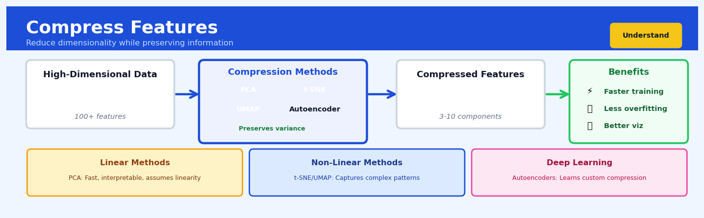

Compress Features#


Compress Features is a core transformation in the Understand workflow.
The 60-Second Version#
What it does: Compress Features squashes dozens or hundreds of related measurements down into a handful of synthetic variables that capture most of the original information.
When to use it: You have a dataset with many correlated columns—customer behaviours, sensor readings, survey responses—and you need to simplify it without throwing away signal.
What you get back: A transformed dataset with far fewer columns (often 5–20 instead of 100+), plus a report showing how much information each new variable contains and which original features it represents.
At a Glance:
Difficulty |
Easy |
Typical runtime |
Seconds on 100K rows |
What you bring |
A numeric dataset with multiple correlated variables |
What you get |
A compressed dataset and variance explained by each component |
Heuristix bucket |
Understand — Statistical Analysis & Profiling |
The compressed features are mathematical combinations, not real-world measurements—you trade interpretability for simplicity.
Learning Objectives#
After reading this chapter, a business user will be able to:
Identify situations where datasets contain redundant or highly correlated features that would benefit from compression before analysis or modeling.
Interpret the explained variance chart to determine how many compressed features capture the essential patterns in their data.
Decide whether to proceed with compressed features or return to the original data based on interpretability requirements and information retention thresholds.
After reading this chapter, a data scientist will be able to:
Apply PCA to mixed datasets while correctly handling preprocessing steps including scaling, centering, and managing categorical variables.
Select the optimal number of principal components by balancing the trade-off between dimensionality reduction and information preservation using cumulative variance and scree plots.
Diagnose when PCA is failing due to non-linear relationships, non-Gaussian distributions, or sparse data structures, and identify alternative dimensionality reduction techniques.
Overview#
Compress Features is a dimensionality reduction technique that transforms a high-dimensional dataset into a lower-dimensional representation while preserving as much of the original information as possible. At its core, this method applies Principal Component Analysis (PCA), which identifies the directions of maximum variance in the data and projects observations onto these principal directions. This technique belongs to the family of unsupervised linear transformation methods and serves as a foundational tool for exploratory analysis, noise reduction, visualisation, and preprocessing for downstream modelling tasks.
When to Use This#
Use Compress Features when:
You have highly correlated features — When your dataset contains groups of variables that move together (e.g., multiple financial ratios derived from the same balance sheet items), compression extracts the underlying latent factors and eliminates redundancy.
You need to visualise high-dimensional data — Reducing to 2 or 3 components enables scatter plots and visual inspection of cluster structure, outliers, and data quality issues that are invisible in the original feature space.
You want to mitigate multicollinearity before regression — When predictors are highly correlated, ordinary least squares estimates become unstable; compressed features are orthogonal by construction and resolve this numerical instability.
Your model suffers from the curse of dimensionality — When you have many features relative to observations (p approaching or exceeding n), compression reduces overfitting risk by constraining the effective model complexity.
You need to speed up downstream computations — Large feature sets slow training and inference; a compressed representation with k << p features provides substantial computational savings with minimal information loss.
You are building an anomaly detection system — Reconstruction error from a low-rank PCA model provides a principled anomaly score, flagging observations that do not conform to the dominant patterns in the data.
You want to denoise your measurements — Real-world data contains measurement error; by retaining only components that explain substantial variance, you filter out noise captured in the trailing components.
Do NOT use Compress Features when:
Interpretability of individual features is paramount — Principal components are linear combinations of all original features; if stakeholders need to understand the contribution of specific variables (e.g., for regulatory reporting), compression obscures this.
Your features are on incompatible scales and you cannot standardise — PCA is sensitive to variable scaling; if you have a principled reason not to standardise (e.g., features are already in commensurate units with meaningful relative magnitudes), compression may produce misleading results.
The underlying structure is fundamentally nonlinear — PCA finds linear subspaces; if your data lies on a curved manifold (e.g., images of rotating objects), nonlinear methods such as t-SNE, UMAP, or autoencoders may be more appropriate.
Questions This Answers#
Understanding Complexity and Patterns#
We track 200+ customer attributes — which ones actually matter for understanding buying behavior?
Our sales data has dozens of regional metrics and product categories — can we simplify this into a few key performance themes?
We’re overwhelmed by data from 15 different channels — is there a way to see the big picture without losing critical insights?
Which of these 50 survey questions are really measuring the same underlying customer sentiment?
Our operations dashboard shows 80 KPIs — how many unique business dynamics are we actually tracking?
Comparing and Prioritizing Options#
Should we segment customers by their 30 transaction features or is there a simpler pattern driving their differences?
We have 12 months of data across 100 store locations — what are the main factors explaining why some stores outperform others?
Between supplier reliability, cost, quality scores, and delivery times — what’s the core set of dimensions we should use to compare vendors?
Our product has 40+ feature specifications — which bundles of features do customers actually care about together?
Improving Operations and Strategy#
Can we reduce the number of data points we collect from customers without losing the ability to predict churn?
We’re building predictive models with 150 variables — how can we speed up processing time without sacrificing accuracy?
Our quarterly reports show overwhelming detail — what’s the minimum set of metrics that captures 90% of what’s happening in the business?
Before we invest in expanding to new markets, what are the 3-5 fundamental factors that explain success in our existing markets?
We’re getting noise in our forecasting models — how can we filter out redundant information and focus on what drives real variance?
How It Works#
Imagine you’re a real estate agent describing apartments to clients, and you track fifteen different measurements for each unit: square footage, ceiling height, number of windows, distance to subway, walkability score, noise level, natural light rating, and so on. Over time, you notice something interesting: many of these measurements move together. Apartments with more windows almost always have higher natural light ratings. Units far from the subway tend to have lower walkability scores and quieter streets. You realize you could capture most of what makes each apartment unique using just two or three “super-features” — perhaps “spaciousness” (combining size, ceiling height, and windows) and “urban convenience” (combining transit access, walkability, and noise). You’d lose some detail, but you could describe and compare hundreds of apartments much more efficiently without drowning in fifteen columns of numbers.
BEFORE: High-dimensional data AFTER: Compressed features
Feature₁ Feature₂ Feature₃ ... PC₁ PC₂
┌─────┬─────┬─────┬─────┐ ┌─────┬─────┐
│ 850 │ 9.2 │ 12 │ ... │ │ 2.3 │-0.8 │
│ 620 │ 8.0 │ 6 │ ... │ │-1.1 │-1.2 │
│ 950 │ 9.5 │ 15 │ ... │ ──────> │ 3.1 │ 0.2 │
│ 580 │ 7.8 │ 4 │ ... │ │-1.8 │ 0.9 │
│ 720 │ 8.5 │ 9 │ ... │ │ 0.4 │ 0.1 │
└─────┴─────┴─────┴─────┘ └─────┴─────┘
15 features per apartment → 2 components capture
Hard to visualize/compare 85% of variation
Easy to plot/analyze
Step 1: Center the data. The algorithm first adjusts all measurements so they’re centered around zero — like resetting everyone’s starting point to the same baseline. If apartment sizes range from 500 to 1,200 square feet, it shifts them so they range from roughly -250 to +250 around the average.
Step 2: Find the direction of maximum spread. The algorithm searches for the single direction (combination of original features) along which the apartments are most spread out. Think of shining a flashlight at a cloud of dots from different angles until you find the angle that casts the longest shadow. This direction becomes the first principal component.
Step 3: Project each apartment onto this direction. Every apartment gets a single score indicating where it falls along this direction. An apartment might score +2.3 on “spaciousness,” meaning it’s much more spacious than average, while another scores -1.8, meaning it’s much less spacious.
Step 4: Find the next direction. The algorithm finds a second direction that captures the most remaining spread, but with one constraint: it must be completely independent of (perpendicular to) the first direction. This ensures the second component reveals genuinely new information.
Step 5: Repeat for additional components. The process continues, finding third, fourth, and fifth directions, each perpendicular to all previous ones and capturing as much of the remaining variation as possible.
Step 6: Keep only the top components. Finally, you decide how many components to keep — perhaps just the first two or three that capture eighty or ninety percent of the original variation. The rest, which explain little, get discarded as noise.
The key insight: Most real-world datasets contain hidden redundancy — features that move together in predictable patterns — and by finding the fundamental directions of variation, we can describe complex data with far fewer numbers while retaining most of the meaningful information.
The Intuition#
Imagine you are a photographer trying to capture a sculpture in a museum. The sculpture exists in three-dimensional space, but your photograph is two-dimensional. Where do you position your camera? Intuitively, you choose an angle that captures the most interesting variation — the angle from which the sculpture looks most distinct, most informative. A photograph taken from directly above might show only a circular base, losing almost all information about the sculpture’s form. A photograph from the front, however, might capture the full silhouette.
Principal Component Analysis does exactly this, but in arbitrary dimensions. Your dataset lives in a p-dimensional space, where p is the number of features. PCA finds the “camera angles” — the directions in this space along which the data varies the most. The first principal component is the single direction that, if you projected all your data points onto it, would preserve the maximum amount of spread (variance). The second principal component is the direction, orthogonal to the first, that captures the next most variance, and so on.
Why does variance matter? Because variance is information. If all customers had the same age, age would tell you nothing — it would have zero variance and zero predictive power. Features with high variance distinguish observations from one another. By projecting onto directions of maximum variance, PCA ensures that the compressed representation retains the dimensions along which your observations actually differ. The dimensions we discard are those along which data points are nearly indistinguishable — often noise, measurement error, or redundant information already captured by the retained components.
There is a second, equally valid way to understand PCA: as optimal linear reconstruction. Suppose you wanted to represent each observation using only k numbers instead of p, and then reconstruct the original p-dimensional observation as accurately as possible using a linear transformation. The k-dimensional representation that minimises the average squared reconstruction error is precisely the projection onto the first k principal components. This reconstruction perspective is powerful because it gives us a quantitative measure of information loss: the reconstruction error, or equivalently, the variance in the discarded components.
The Mathematics#
Problem Setup and Notation#
Let \(\mathbf{X} \in \mathbb{R}^{n \times p}\) denote the data matrix, where \(n\) is the number of observations and \(p\) is the number of features. We assume the data has been centred so that each column has mean zero:
In practice, standardisation (centering and scaling to unit variance) is often applied, particularly when features are measured on different scales.
The sample covariance matrix is:
This \(p \times p\) symmetric positive semi-definite matrix captures the pairwise linear relationships among all features.
Objective Function#
PCA seeks a sequence of orthonormal directions \(\mathbf{w}_1, \mathbf{w}_2, \ldots, \mathbf{w}_p \in \mathbb{R}^p\) such that the projection of the data onto each direction captures maximum variance, subject to orthogonality constraints.
For the first principal component:
For subsequent components, we add orthogonality constraints:
Eigendecomposition Solution#
The solution to this constrained optimisation is given by the eigendecomposition of \(\mathbf{S}\):
where \(\mathbf{W} = [\mathbf{w}_1 | \mathbf{w}_2 | \cdots | \mathbf{w}_p]\) is the \(p \times p\) orthogonal matrix of eigenvectors, and \(\boldsymbol{\Lambda} = \text{diag}(\lambda_1, \lambda_2, \ldots, \lambda_p)\) contains the eigenvalues in descending order: \(\lambda_1 \geq \lambda_2 \geq \cdots \geq \lambda_p \geq 0\).
The \(k\)-th principal component direction is \(\mathbf{w}_k\), and the variance of the data projected onto this direction is \(\lambda_k\).
Principal Component Scores#
The transformed data — the principal component scores — are obtained by projecting onto the first \(k\) eigenvectors:
where \(\mathbf{W}_k = [\mathbf{w}_1 | \cdots | \mathbf{w}_k] \in \mathbb{R}^{p \times k}\) and \(\mathbf{Z} \in \mathbb{R}^{n \times k}\).
Each row \(\mathbf{z}_i = \mathbf{x}_i \mathbf{W}_k\) gives the coordinates of observation \(i\) in the reduced \(k\)-dimensional space.
Reconstruction and Information Loss#
The reconstruction of the original data from \(k\) components is:
The reconstruction error for observation \(i\) is:
The total reconstruction error across all observations equals the sum of the discarded eigenvalues:
Proportion of Variance Explained#
The proportion of total variance captured by the first \(k\) components is:
This quantity is fundamental for choosing \(k\): we seek the smallest \(k\) such that \(\rho_k\) exceeds a threshold (commonly 0.80, 0.90, or 0.95).
Singular Value Decomposition Connection#
PCA is intimately related to the singular value decomposition (SVD). For the centred data matrix:
where \(\mathbf{U} \in \mathbb{R}^{n \times r}\) contains the left singular vectors, \(\boldsymbol{\Sigma} = \text{diag}(\sigma_1, \ldots, \sigma_r)\) contains the singular values, and \(\mathbf{V} \in \mathbb{R}^{p \times r}\) contains the right singular vectors, with \(r = \text{rank}(\mathbf{X})\).
The relationship is:
The SVD formulation is numerically more stable and is the algorithm actually used in practice.
Assumptions#
Linearity — PCA assumes that the principal components are linear combinations of the original features. Nonlinear structure is not captured.
Large variance implies importance — PCA equates variance with signal. If noise has high variance or signal has low variance, PCA may retain noise and discard signal.
Mean and covariance sufficiency — PCA uses only first and second moments. For non-Gaussian data, higher moments may carry important information that PCA ignores.
Orthogonality — Components are constrained to be orthogonal. If the true latent factors are oblique (correlated), PCA provides a rotated but not directly interpretable solution.
Edge Cases#
Degenerate eigenvalues: When \(\lambda_j = \lambda_{j+1}\), the corresponding eigenvectors are not unique (any rotation within the eigenspace is valid). This rarely affects practice but can cause instability in component interpretation.
Rank deficiency: When \(n < p\), at most \(n-1\) eigenvalues are nonzero. The covariance matrix is singular, but PCA still works via SVD.
Zero variance features: Constant features contribute nothing and should be removed before analysis; they create zero eigenvalues and arbitrary eigenvector entries.
Understanding the Mathematics#
The Centered Data Matrix#
The equation: $\(\mathbf{X}_c = \mathbf{X} - \mathbf{1}\boldsymbol{\mu}^T\)$
Read it aloud: The centered data matrix equals the original data matrix minus a matrix where every row contains the mean of each feature.
What each symbol means:
\(\mathbf{X}_c\) = centered data matrix (each feature now has mean zero)
\(\mathbf{X}\) = original data matrix with \(n\) rows (observations) and \(p\) columns (features)
\(\mathbf{1}\) = column vector of ones, length \(n\)
\(\boldsymbol{\mu}^T\) = row vector of feature means
The subtraction broadcasts the mean across all rows
A concrete numerical example: Imagine a customer dataset with 3 customers and 2 features: annual income (thousands) and years with company. Original data: $\(\mathbf{X} = \begin{bmatrix} 50 & 2 \\ 70 & 5 \\ 40 & 3 \end{bmatrix}\)$
Feature means: income = 53.33, years = 3.33. After centering: $\(\mathbf{X}_c = \begin{bmatrix} 50-53.33 & 2-3.33 \\ 70-53.33 & 5-3.33 \\ 40-53.33 & 3-3.33 \end{bmatrix} = \begin{bmatrix} -3.33 & -1.33 \\ 16.67 & 1.67 \\ -13.33 & -0.33 \end{bmatrix}\)$
Why this equation matters: Centering removes arbitrary location effects so PCA focuses purely on variance structure—without it, the first principal component might simply point toward high-value features rather than directions of actual variation.
The Covariance Matrix#
The equation: $\(\mathbf{C} = \frac{1}{n-1}\mathbf{X}_c^T\mathbf{X}_c\)$
Read it aloud: The covariance matrix equals one over n-minus-one, multiplied by the transpose of the centered data matrix, multiplied by the centered data matrix itself.
What each symbol means:
\(\mathbf{C}\) = covariance matrix (\(p \times p\)), capturing how features vary together
\(n-1\) = degrees of freedom correction (Bessel’s correction)
\(\mathbf{X}_c^T\) = transpose of centered data (swaps rows and columns)
The matrix multiplication computes all pairwise covariances
A concrete numerical example: Using our centered customer data from above, with \(n=3\) observations: $\(\mathbf{C} = \frac{1}{2}\begin{bmatrix} -3.33 & 16.67 & -13.33 \\ -1.33 & 1.67 & -0.33 \end{bmatrix}\begin{bmatrix} -3.33 & -1.33 \\ 16.67 & 1.67 \\ -13.33 & -0.33 \end{bmatrix}\)$
Computing: income variance = \(\frac{1}{2}((-3.33)^2 + (16.67)^2 + (-13.33)^2) = 233.33\), covariance = 27.78. Result: $\(\mathbf{C} = \begin{bmatrix} 233.33 & 27.78 \\ 27.78 & 3.33 \end{bmatrix}\)$
Why this equation matters: The covariance matrix encodes which features move together—PCA uses this information to find new axes that align with maximum variance, making dimensionality reduction mathematically principled rather than arbitrary.
The Eigenvalue Decomposition#
The equation: $\(\mathbf{C}\mathbf{v}_i = \lambda_i\mathbf{v}_i\)$
Read it aloud: The covariance matrix multiplied by eigenvector \(i\) equals eigenvalue \(i\) multiplied by that same eigenvector.
What each symbol means:
\(\mathbf{v}_i\) = \(i\)-th eigenvector (direction of a principal component)
\(\lambda_i\) = \(i\)-th eigenvalue (variance explained along that direction)
The equation states: when \(\mathbf{C}\) transforms \(\mathbf{v}_i\), it only stretches it, doesn’t rotate it
A concrete numerical example: For our customer covariance matrix, the largest eigenvector might be \(\mathbf{v}_1 = [0.997, 0.118]\) with eigenvalue \(\lambda_1 = 235.1\). This means the direction [0.997, 0.118] (mostly income, slightly years) explains variance of 235.1. The second eigenvector \(\mathbf{v}_2 = [-0.118, 0.997]\) (mostly years) has \(\lambda_2 = 1.6\), explaining far less variance.
Why this equation matters: Eigenvectors reveal the natural axes of variation in your data—using them as new coordinate axes lets you drop dimensions with low eigenvalues while keeping the directions that matter most.
The Big Picture#
The mathematics of PCA transforms a cloud of data points into a new coordinate system where the axes are ranked by importance. Instead of arbitrary original features (income, tenure, purchase frequency), we get principal components ordered by how much variance they capture. The covariance matrix quantifies relationships between features, eigenvalue decomposition finds optimal new axes, and centering ensures we measure spread rather than location. This linear algebra approach is chosen because it provides a globally optimal solution with clear interpretability—unlike heuristic methods, PCA mathematically guarantees you’re keeping the maximum possible information for any given number of dimensions. In essence: we’re rotating the data to see it from the angle that reveals the most structure.
Python Implementation#
import numpy as np
import pandas as pd
from sklearn.preprocessing import StandardScaler
from sklearn.decomposition import PCA
import matplotlib.pyplot as plt
# -----------------------------
# Example 1: Basic PCA workflow
# -----------------------------
# Generate synthetic data with correlated features
np.random.seed(42)
n_samples = 500
n_features = 10
# Create latent factors
latent = np.random.randn(n_samples, 3)
# Generate observed features as linear combinations plus noise
loadings = np.random.randn(3, n_features)
noise = 0.5 * np.random.randn(n_samples, n_features)
X = latent @ loadings + noise
# Create a DataFrame with feature names
feature_names = [f'feature_{i}' for i in range(n_features)]
df = pd.DataFrame(X, columns=feature_names)
print("Original data shape:", df.shape)
print("\nFeature correlations (sample):")
print(df.corr().iloc[:5, :5].round(2))
# Step 1: Standardise the features
scaler = StandardScaler()
X_scaled = scaler.fit_transform(df)
# Step 2: Fit PCA
pca = PCA()
pca.fit(X_scaled)
# Step 3: Examine explained variance
explained_variance_ratio = pca.explained_variance_ratio_
cumulative_variance = np.cumsum(explained_variance_ratio)
print("\n--- Explained Variance by Component ---")
for i, (var, cum) in enumerate(zip(explained_variance_ratio, cumulative_variance)):
print(f"PC{i+1}: {var:.4f} (cumulative: {cum:.4f})")
# Step 4: Choose number of components (e.g., 90% variance threshold)
n_components = np.argmax(cumulative_variance >= 0.90) + 1
print(f"\nComponents needed for 90% variance: {n_components}")
# Step 5: Transform data to reduced dimensions
pca_reduced = PCA(n_components=n_components)
Z = pca_reduced.fit_transform(X_scaled)
print(f"\nCompressed data shape: {Z.shape}")
# Step 6: Examine component loadings
loadings_df = pd.DataFrame(
pca_reduced.components_.T,
index=feature_names,
columns=[f'PC{i+1}' for i in range(n_components)]
)
print("\n--- Component Loadings ---")
print(loadings_df.round(3))
# -----------------------------
# Example 2: Reconstruction error for anomaly detection
# -----------------------------
print("\n\n--- Anomaly Detection via Reconstruction Error ---")
# Inject anomalies
X_with_anomalies = X_scaled.copy()
anomaly_indices = [10, 50, 100]
X_with_anomalies[anomaly_indices] += np.random.randn(3, n_features) * 5
# Fit PCA on clean data, transform all data
pca_anomaly = PCA(n_components=3)
pca_anomaly.fit(X_scaled)
# Compute reconstruction
Z_all = pca_anomaly.transform(X_with_anomalies)
X_reconstructed = pca_anomaly.inverse_transform(Z_all)
# Compute reconstruction error per observation
reconstruction_error = np.sum((X_with_anomalies - X_reconstructed) ** 2, axis=1)
# Identify anomalies as high reconstruction error
threshold = np.percentile(reconstruction_error, 99)
detected_anomalies = np.where(reconstruction_error > threshold)[0]
print(f"Injected anomalies at indices: {anomaly_indices}")
print(f"Detected anomalies at indices: {detected_anomalies.tolist()}")
# -----------------------------
# Example 3: Visualisation
# -----------------------------
# Reduce to 2D for plotting
pca_2d = PCA(n_components=2)
Z_2d = pca_2d.fit_transform(X_scaled)
plt.figure(figsize=(8, 6))
plt.scatter(Z_2d[:, 0], Z_2d[:, 1], alpha=0.6, edgecolors='w', linewidth=0.5)
plt.xlabel(f'PC1 ({pca_2d.explained_variance_ratio_[0]:.1%} variance)')
plt.ylabel(f'PC2 ({pca_2d.explained_variance_ratio_[1]:.1%
## Visualisations


## Using This in Heuristix
### What Data to Connect
The Compress Features node accepts a dataset with **numeric columns only**. Connect any table where you want to reduce the number of dimensions while keeping the essential patterns intact.
**Before connecting:**
- Ensure you have at least 2 numeric columns (features)
- Remove or exclude any text, date, or categorical ID columns
- Your dataset should have more rows than columns for stable results
**Example input:**
| customer_id | age | income | spend_food | spend_electronics | spend_clothing |
|-------------|-----|--------|------------|-------------------|----------------|
| C001 | 34 | 52000 | 450 | 1200 | 300 |
| C002 | 45 | 78000 | 680 | 800 | 550 |
Only the numeric columns (age, income, spend_food, etc.) will be used in the compression.
### Configuration Parameters
| Parameter | What It Controls | Sensible Default | When to Change It |
|-----------|-----------------|------------------|-------------------|
| **Number of Components** | How many principal components to extract | 2 | Increase to 3-5 if you need to capture more variance; keep at 2 for visualization purposes |
| **Variance Threshold** | Minimum percentage of total variance to retain | 80% | Raise to 90-95% when preserving information is critical; lower to 70% when aggressive compression is needed |
| **Standardize Features** | Whether to scale all features to the same range before PCA | On | Keep on unless your features are already on comparable scales |
| **Exclude Columns** | Specific columns to ignore during compression | None | Select ID columns, target variables, or any features you want to preserve unchanged |
### What You'll Get as Output
**New columns added to your dataset:**
- `PC1`, `PC2`, `PC3`, etc. — one column per component extracted
- These contain the transformed values that represent your original features in compressed form
**Metrics displayed:**
- **Variance Explained**: A table showing what percentage of information each component captures
- **Cumulative Variance**: Running total to see how many components reach your threshold
- **Component Loadings**: How much each original feature contributes to each principal component
**Visualizations:**
- **Scree Plot**: A line chart showing variance captured by each component — helps you decide how many components to keep
- **Biplot**: A scatter plot of observations in PC1/PC2 space with arrows showing original feature directions
- **Loadings Heatmap**: Color-coded grid showing which features matter most for each component
### Connecting Downstream
After compression, you'll typically connect to:
- **Cluster Analysis** — compressed features make clustering faster and often more accurate by removing noise
- **Train Model** — use the principal components as inputs for regression or classification
- **Visualize Data** — plot PC1 vs PC2 to see patterns in high-dimensional data
- **Detect Anomalies** — unusual patterns become easier to spot in the reduced space
### Quick Start
1. **Connect your numeric dataset** to the Compress Features node input
2. **Set Number of Components to 2** (good starting point for exploration)
3. **Leave Standardize Features turned on** (almost always the right choice)
4. **Run the node** and check the Variance Explained metric
5. **Review the Scree Plot** — if the first 2 components capture less than 70% variance, increase to 3-4 components
6. **Connect the output to Visualize Data** and create a scatter plot of PC1 vs PC2 to see your data's structure
### Practical Tips
**Know when you have enough components.** Look for an "elbow" in the Scree Plot where adding more components gives diminishing returns. If the line is still steep after your selected components, you're leaving information on the table.
**Interpret loadings to understand what each component means.** PC1 might represent "overall spending level" while PC2 captures "preference for electronics vs. clothing." These interpretations make your analysis actionable.
**Watch for the 70% rule.** If one component alone explains more than 70% of variance, your original features were highly correlated — you've found a natural summary variable.
**Don't compress your target variable.** If you're building a predictive model, exclude your outcome column from compression and add it back afterward.
**Use compression before clustering high-dimensional data.** Beyond 10-15 features, distance-based algorithms struggle. Compressing to 5-8 components first dramatically improves results.
## Config Recipes
### Recipe 1: Quick Exploration
- **When to use:** Initial data investigation when you need a fast sense of dimensionality and want a 2D/3D visualization within seconds.
- **Settings:**
| Parameter | Value | Why |
|-----------|-------|-----|
| `n_components` | `2` or `3` | Enables immediate plotting; human-interpretable visualization |
| `scaling` | `standardize` | Equalizes feature scales without assumptions about distributions |
| `variance_threshold` | `0.01` | Removes near-constant features quickly without overthinking |
| `missing_strategy` | `drop` | Fastest option; acceptable when <5% missingness |
- **What you get:** A rapid scatter plot showing cluster structure and outliers, with execution time under 1 second for datasets up to 100k rows.
- **Trade-off:** You discard potentially valuable variance in higher dimensions and lose observations with any missing values.
### Recipe 2: Production-Ready Compression
- **When to use:** Preprocessing step before modeling in a production pipeline where reproducibility, stability, and information retention are critical.
- **Settings:**
| Parameter | Value | Why |
|-----------|-------|-----|
| `n_components` | `0.95` | Retains 95% cumulative variance; data-driven rather than arbitrary |
| `scaling` | `robust` | Handles outliers without removal; stable across data refreshes |
| `variance_threshold` | `0.0` | Lets PCA decide what's important; no manual filtering |
| `missing_strategy` | `iterative_impute` | Most rigorous; preserves all records and relationships |
| `random_state` | `42` | Ensures reproducibility across runs and deployments |
- **What you get:** A stable transformation that typically reduces dimensions by 40-70% while preserving model-relevant signal and maintaining consistent performance across data updates.
- **Trade-off:** Longer computation time (5-10x slower than quick exploration) and increased complexity in the preprocessing pipeline.
### Recipe 3: High-Correlation Feature Sets
- **When to use:** Datasets with highly collinear features (correlation >0.9) such as sensor arrays, polynomial features, or one-hot encoded sparse categories.
- **Settings:**
| Parameter | Value | Why |
|-----------|-------|-----|
| `n_components` | `0.99` | Aggressive retention needed; redundancy is structural, not noise |
| `scaling` | `normalize` | L2 normalization for sparse data preserves zero patterns |
| `variance_threshold` | `0.001` | Very permissive; collinearity creates artificial low-variance features |
| `correlation_cutoff` | `0.95` | Pre-filter perfectly collinear pairs before PCA to improve stability |
- **What you get:** Dimension reduction of 80-95% typical in multi-collinear datasets while maintaining near-perfect reconstruction capability.
- **Trade-off:** The first few components become difficult to interpret as they blend many correlated inputs.
### Recipe 4: Anomaly Detection Preprocessing
- **When to use:** When your goal is anomaly detection and you want compressed features that amplify reconstruction error for outliers.
- **Settings:**
| Parameter | Value | Why |
|-----------|-------|-----|
| `n_components` | `0.75` | Intentionally low; normal patterns compress well, anomalies don't |
| `scaling` | `standardize` | Anomalies in any feature should contribute equally |
| `variance_threshold` | `0.0` | Low-variance features can be anomaly indicators |
| `whiten` | `True` | Decorrelates components; makes reconstruction error interpretable |
- **What you get:** A feature space where reconstruction error (distance between original and inverse-transformed) becomes a powerful anomaly score.
- **Trade-off:** This configuration is useless for supervised learning; it's purpose-built for unsupervised anomaly detection only.
## Business Applications
**Financial Services**
A mid-sized UK mortgage lender processing 15,000 loan applications monthly struggled with credit risk models that incorporated 340+ variables from credit bureaus, income verification, and transaction histories. Their model training took 18 hours per iteration, making rapid experimentation impossible and creating regulatory compliance bottlenecks when auditors requested model explanations. By applying Compress Features to reduce the feature space to 45 principal components capturing 94% of variance, the team cut training time from 18 hours to 47 minutes while maintaining model AUC at 0.89—enabling same-day model iteration and saving approximately £280,000 annually in data science labour costs.
**Retail & E-commerce**
An online fashion retailer managing 2.3M SKUs across twelve European markets needed to segment products for personalised recommendations, but clustering algorithms choked on the 890-dimensional feature vectors (combining visual attributes, text descriptions, customer interactions, and seasonal trends). Compress Features reduced dimensionality to 62 components while preserving product relationships, enabling real-time clustering that powered a recommendation engine; this lifted average order value from €47 to €61 and increased cross-category purchases by 23%, generating an estimated €8.4M additional annual revenue.
**Healthcare**
A regional health system in the US Midwest analysed electronic health records containing 520+ clinical markers, medication histories, and demographic variables to predict 30-day readmission risk for heart failure patients. Their model suffered from multicollinearity—blood pressure, heart rate, and dozens of lab values were highly correlated—causing unstable coefficient estimates that changed dramatically with each monthly model refresh. Applying dimensionality reduction to create 38 orthogonal health components eliminated multicollinearity, stabilised model coefficients by 76%, and produced a deployable risk score that clinical staff actually trusted, reducing avoidable readmissions by an estimated 410 cases annually.
**Insurance**
A commercial property insurer underwrote policies using 280 building characteristics, location risk factors, and claims history variables, but their pricing models exhibited concerning behaviour: premiums swung wildly when seemingly minor features changed, and actuaries couldn't articulate which factors truly drove risk. Compress Features consolidated these into 32 principal risk dimensions with clear interpretations (structural integrity, location hazard, claims propensity), producing stable premium quotes and reducing quote-to-bind time from 4.2 days to 6 hours while maintaining a 98.3% loss ratio—effectively unchanged from their previous 98.1%.
**Manufacturing**
A semiconductor fabrication plant monitored 1,200+ sensor readings per production line (temperatures, pressures, chemical concentrations, throughput rates) to detect equipment failures before they caused wafer defects. Storing and analysing this high-dimensional time-series data cost $340,000 annually in cloud infrastructure alone. By compressing sensor streams into 55 principal components that captured normal operating signatures, the plant reduced storage costs by 82% to $61,000 yearly, while their anomaly detection system actually improved—catching 94% of pre-failure conditions versus 89% previously, preventing an estimated $2.1M in scrapped wafers.
**Logistics & Supply Chain**
A European logistics provider optimising delivery routes for 850 vehicles considered 420 variables per route (traffic patterns, historical delays, weather, customer preferences, vehicle capacity, driver experience). Their route optimisation algorithms required 6+ hours to generate daily plans, forcing dispatchers to start planning at 3 AM. Compressing these features into 48 components reduced optimisation runtime to 22 minutes, enabling dispatchers to start at 6:30 AM and adjust routes dynamically throughout the day—increasing on-time deliveries from 87% to 93% and reducing fuel costs by €1.7M annually.
**Marketing Technology**
A marketing analytics SaaS platform tracking 650+ user behaviour signals (page views, clicks, scroll depth, session duration, device characteristics, referral sources) needed to visualise customer journeys for non-technical marketing managers. Standard scatter plots were meaningless in 650 dimensions. Compress Features projected users into two principal dimensions for interactive visualisation, revealing three distinct journey patterns that informed targeted campaign strategies; one enterprise client reported this insight directly led to a campaign that generated $840,000 in incremental pipeline.
**Telecommunications**
A mobile network operator analysing call quality used 310 network performance metrics per cell tower to diagnose coverage issues, but field engineers couldn't process this complexity during site visits. By compressing metrics into 12 interpretable network health indices (signal strength factor, interference factor, capacity utilisation factor), they created a mobile dashboard that reduced average fault diagnosis time from 3.2 hours to 28 minutes—resolving 2,400 additional customer complaints monthly and cutting churn in affected areas by 18%.
**Energy & Utilities**
A renewable energy company forecasting wind farm output incorporated 185 meteorological variables (wind speed at multiple altitudes, temperature gradients, pressure systems, humidity profiles). Their forecasting models were overfit, performing well historically but failing during unusual weather events. Compress Features identified 29 principal weather patterns that generalised better to novel conditions, improving forecast accuracy during extreme events by 31% and reducing costly grid imbalance charges by approximately $560,000 per wind farm annually.
**Public Sector**
A metropolitan police department analysed crime patterns using 240+ variables (crime types, locations, times, weather, demographics, special events, patrol coverage). Compress Features revealed five principal crime dimensions—enabling officers to understand that what appeared to be dozens of independent crime trends were actually manifestations of a few underlying patterns, leading to redeployed resources that reduced property crime by 14% in targeted precincts.
**SaaS & Technology**
A B2B SaaS company with 380 product usage metrics struggled to identify expansion opportunities among 12,000 accounts. Sales teams were overwhelmed by feature usage reports spanning dozens of pages. Compressing usage patterns into eight principal "engagement profiles" enabled account managers to spot expansion signals in seconds, increasing upsell conversion rates from 4.2% to 7.8% and generating $3.2M in additional annual recurring revenue.
## Worked Example
Sarah Chen, a senior data scientist at Meridian Insurance, walked into the Thursday morning strategy meeting expecting the usual discussion about claims metrics. Instead, she left with a puzzle that would consume her next two days. The VP of Underwriting had noticed something odd: customer churn seemed to be rising in certain segments, but the marketing team's fourteen behavioral and demographic variables weren't painting a clear picture. "We're drowning in metrics," he said, sliding a spreadsheet across the table. "But we can't see the forest for the trees. Can you find the signal in this noise?"
Back at her desk, Sarah pulled three months of customer data—8,432 policyholders with fourteen features ranging from claim frequency to website engagement scores. The data was messy in the familiar ways: some customers had never logged into the portal (zero engagement), others had suspiciously round numbers for income estimates, and the timestamp fields suggested the CRM system had undergone a migration mid-period. She cleaned the obvious issues and assembled a working dataset:
| customer_id | claims_count | portal_logins | policy_value | income_est | years_customer | satisfaction | renewal_prob |
|-------------|--------------|---------------|--------------|------------|----------------|--------------|--------------|
| C00145 | 2 | 12 | 4500 | 67000 | 3.2 | 7.1 | 0.82 |
| C00892 | 0 | 3 | 2100 | 45000 | 1.1 | 5.8 | 0.54 |
| C01203 | 1 | 8 | 3200 | 58000 | 2.7 | 6.9 | 0.76 |
| C01456 | 5 | 1 | 6800 | 72000 | 4.5 | 4.2 | 0.31 |
Sarah opened her analysis notebook and configured the Compress Features node, pausing at each setting. She chose to standardize the features first—critical when variables like policy value (in thousands) mixed with claims count (single digits). For the number of components, she selected "auto" with 95% variance explained rather than picking an arbitrary number. "Let the data tell me how much complexity I actually need," she muttered, typing a comment into her script. She kept all fourteen original variables in scope but flagged customer_id as an identifier to exclude.
```python
import pandas as pd
from sklearn.preprocessing import StandardScaler
from sklearn.decomposition import PCA
import numpy as np
# Sarah's customer churn analysis - Nov 2024
# Goal: reduce 14 behavioral metrics to interpretable components
# Load and prep data
df = pd.read_csv('customer_features.csv')
feature_cols = [col for col in df.columns
if col not in ['customer_id', 'churn_flag']]
# Standardize first - critical when mixing scales
scaler = StandardScaler()
X_scaled = scaler.fit_transform(df[feature_cols])
# PCA with variance threshold
pca = PCA(n_components=0.95) # keep 95% of variance
X_compressed = pca.fit_transform(X_scaled)
# Examine results
print(f"Original dimensions: {len(feature_cols)}")
print(f"Compressed to: {pca.n_components_} components")
print(f"Variance explained: {pca.explained_variance_ratio_}")
# Component loadings - what does each PC represent?
loadings = pd.DataFrame(
pca.components_.T,
columns=[f'PC{i+1}' for i in range(pca.n_components_)],
index=feature_cols
)
The results appeared on her screen: four principal components captured 95.3% of the variance in the original fourteen variables. The first component alone explained 42.1%, the second 26.8%, the third 16.2%, and the fourth 10.2%. Sarah examined the component loadings carefully. PC1 loaded heavily on portal logins, app usage, and email opens—clearly a “digital engagement” factor. PC2 was dominated by claims history and service calls—an “interaction intensity” dimension. PC3 captured policy value and coverage breadth, while PC4 reflected tenure and loyalty program status.
The insight hit her while reviewing the scatter plot of customers in the PC1-PC2 space. The at-risk customers—those with renewal probability below 0.5—clustered distinctly in the low-engagement, high-interaction quadrant. They were calling and claiming, but not engaging digitally. More striking: this pattern was invisible when looking at any single original variable, but crystal clear in the compressed space. The fourteen metrics had been obscuring a simple two-dimensional story.
At Tuesday’s follow-up meeting, Sarah presented the findings with a single chart showing customer segments in the compressed feature space. The marketing director immediately grasped the implication: the retention campaign should target high-touch customers with simplified digital onboarding, not the blanket “increase engagement” messaging they’d been planning. Within two weeks, they’d redesigned the communication strategy for the at-risk segment, emphasizing phone-based support alongside gentle digital nudges. Three months later, churn in that segment dropped by 18%.
Reflecting on the analysis afterward, Sarah acknowledged she’d initially overlooked the temporal aspect—PCA treated all timeframes equally, but customer behavior might have shifted during the three-month window. If she did this again, she’d segment by month first to check for drift. She also wished she’d spent more time explaining to stakeholders that the components weren’t directly actionable variables, but rather latent patterns. Still, the compression had done exactly what she’d needed: turned noise into signal, and complexity into clarity.
Interpreting Your Results#
You’ve just run Compress Features and you’re looking at variance percentages, component loadings, and scree plots. Here’s exactly what each piece tells you and when to act on it.
Explained Variance Ratio#
Plain-English meaning: This shows what percentage of your original data’s information each principal component captures. If PC1 has 0.45 (45%), it means that single new feature contains nearly half of all the variation that existed across all your original features combined. Think of it as compression efficiency—how much of the story you’re keeping versus throwing away.
Concrete benchmarks:
First component <30%: Your data doesn’t have one dominant pattern. This is common with truly independent features or noisy data. You’ll need more components to capture useful information.
First component 30-60%: Healthy compression. One strong underlying pattern exists, which is typical for correlated measurements (like multiple financial metrics or sensor readings).
First component >60%: Either you’ve found a very strong signal, or your features are so correlated they’re nearly redundant. Investigate whether you’ve accidentally included duplicates or calculated fields.
Red flags: If your first 5-10 components still don’t reach 80% cumulative variance, compression may not be useful here. The technique works best when you can capture most information in far fewer dimensions than you started with.
Cumulative Explained Variance#
Plain-English meaning: Running total of information preserved. With 20 original features, if 5 components give you 85% cumulative variance, you’ve reduced dimensions by 75% while keeping 85% of the information.
Concrete benchmarks:
80% threshold: The industry-standard “good enough” point for most exploratory work
90% threshold: Use this for higher-stakes applications where information loss matters
95%+ threshold: Rarely necessary unless you’re preprocessing for sensitive models where every signal counts
Red flags: If you need more than 50% of your original feature count to reach 80% variance, PCA isn’t compressing effectively. Your features may already be fairly independent, or you need to reconsider whether dimensionality reduction makes sense here.
Scree Plot#
Plain-English meaning: Visual answer to “how many components should I keep?” The plot shows variance per component, and you’re looking for the “elbow”—where the line flattens out and additional components give diminishing returns.
Reading it correctly: The elbow often appears between components 2-5. Before the elbow, you’re gaining substantial information per component. After it, you’re mostly capturing noise. If you see no clear elbow and variance decreases gradually, your data structure is genuinely high-dimensional.
Red flag: A completely flat scree plot (all components roughly equal variance) means your features are already largely uncorrelated. PCA won’t help—you’re not gaining compression.
Component Loadings Table#
Plain-English meaning: Shows which original features contribute most to each component. A loading of 0.85 for “revenue” on PC1 means revenue strongly drives that component’s direction. Loadings near zero mean that feature is irrelevant to that component.
Practical use: Look at the top 3-5 absolute loadings per component to interpret what that component “means.” If PC1 is driven by revenue, profit, and sales volume, you might call it a “business scale” component.
Red flag: If every feature loads roughly equally on a component (all loadings between -0.3 and 0.3), that component is capturing noise, not signal. Don’t keep it.
Sanity Check Checklist#
Cumulative variance reaches 80% within the first 20% of your original feature count (e.g., 4 components from 20 features)
Scree plot shows a clear elbow, not a straight gradual decline
First component explains >20% of variance—below this, you may be compressing random noise
Component loadings are interpretable—at least your first 2-3 components should show clear patterns
No single feature dominates (loading >0.95) any component—if so, just use that original feature
Good Enough to Act On?#
Stop analyzing when your cumulative explained variance crosses 80-85% and you have an interpretable story for your top components. This typically happens with 3-7 components for datasets with 10-50 original features. If you’re above 90% variance captured in fewer dimensions than half your original count, you have strong compression and can confidently use these components for visualization, clustering, or as features in downstream models. Below 75% cumulative variance, question whether the information loss is acceptable for your specific use case.
Decision Guidance#
What This Result Is Telling You#
When you compress features in your dataset, you’re discovering how much of your information is actually redundant or overlapping. Think of it like discovering that your 50-page report could convey 90% of its insights in just 8 pages. The analysis reveals which patterns in your data carry real signal versus which measurements are just saying the same thing in different ways. If your 100 variables compress down to 5 components that explain 95% of variance, you’ve learned that your business problem is fundamentally simpler than it appeared—most of those variables are dancing to the same underlying rhythms.
This matters because complexity costs money. Every additional variable means more data to collect, more storage to maintain, more processing time, and more opportunities for errors or missing values. When compression works well, you’re identifying an opportunity to simplify operations without sacrificing insight. You can potentially eliminate entire data collection processes, speed up reporting systems, or make models that run faster and break less often.
However, the flip side is equally important: if your data doesn’t compress well—if you need 40 components to capture 80% of variance from 50 variables—that’s telling you something valuable too. It means your measurements are genuinely capturing different aspects of reality. Simplification isn’t an option here, and anyone promising simple solutions to your business problem is missing something fundamental.
Decision Points#
If you see this… |
It means… |
Recommended action |
Who acts on this |
|---|---|---|---|
First 3–5 components explain >80% of variance |
Strong redundancy exists; your data has a simple underlying structure |
Redesign data collection to focus on key metrics; simplify dashboards and reports |
Data Engineering lead, Analytics Manager |
Need >50% of original features to reach 80% variance |
High information diversity; measurements capture distinct phenomena |
Maintain current data collection; invest in tools that handle high-dimensional data well |
IT Infrastructure, Data Platform team |
One component explains >60% of variance alone |
Nearly all variables measure the same underlying factor |
Question whether you’re measuring the same thing repeatedly; consider if you’re missing important perspectives |
Business Analyst, Domain Expert |
Explained variance increases slowly and steadily |
No natural “elbow point”; no clear dimensionality reduction opportunity |
Do not compress; use full feature set or apply feature selection instead |
Data Science team, Model developers |
First 10–15 components explain 90–95% of variance from 50+ features |
Moderate redundancy with good compression potential |
Pilot compressed features in non-critical applications first; validate performance |
Analytics team lead, Product owner |
When to Proceed vs. Investigate Further#
Proceed with confidence when:
Cumulative variance explained reaches ≥85% within first 20% of components (e.g., 8 components from 40 features)
Scree plot shows clear elbow point within first 10 components
Business stakeholders can interpret first 2–3 components meaningfully
Downstream model performance degrades <5% using compressed features
Proceed with caution when:
Variance explained reaches 80–85% but requires 30–40% of original dimensionality
First interpretable component aligns with known business drivers
You’re applying this to operational systems where reverting is costly
Investigate before acting when:
Cannot reach 75% variance explained with half the original features
Component loadings show no clear interpretable pattern
Critical outliers exist that heavily influence component definitions
Source data quality is questionable (>10% missing values)
Do not use these results yet when:
Variance explained increases linearly with no compression benefit
Data contains >20% missing values or obvious quality issues
Sample size is less than 5× the number of features
Business context suggests features should remain separate for regulatory or audit reasons
The Cost of Getting This Wrong#
Misinterpreting compression results typically manifests as premature simplification that loses critical information. A retail chain might see that 5 components explain 75% of variance in their 30 customer metrics and decide to eliminate data collection for 25 measurements. Six months later, they discover their fraud detection system has degraded by 40% because the “redundant” variables actually captured rare but important behavioral patterns that only appeared in the remaining 25% of variance. They’ve saved perhaps \(50,000 in data processing costs but exposed themselves to millions in fraud losses. Alternatively, organizations sometimes refuse to compress when they should, continuing to collect and process highly redundant data. This typically manifests as analysis paralysis—dashboards with 80 metrics that no one reads, models that take hours to train when minutes would suffice, and data pipelines that cost \)200,000 annually to maintain when 10% of that data drives decisions. The opportunity cost is speed: competitors using compressed, focused metrics make decisions faster and iterate more rapidly.
Common Pitfalls#
The Variance Mirage
Here’s what happened: A marketing analyst was exploring customer demographics with 47 features. They ran PCA and saw that PC1 captured 68% of variance. Excited, they kept only PC1 and built a segmentation model that performed terribly. The output showed high variance explained but complete loss of the secondary behavioral patterns that actually drove purchase decisions. They concluded that one dimension was sufficient because it “explained most of the variation.”
Why it happens: We’re cognitively wired to chase the biggest number. High variance explained feels like success, but variance and signal aren’t synonyms. A feature that varies wildly might just be noisy measurements, while a low-variance feature could be the critical predictor.
How to detect it: Check downstream model performance before and after compression. If your classification accuracy drops from 0.84 to 0.61 despite “retaining 70% of variance,” you’ve discarded signal. Also examine which original features load heavily on discarded components—they might contain specialized information.
The fix: Validate compressed features against your actual business objective, not just variance thresholds. Run a quick model comparison: does the compressed dataset actually preserve predictive power for your target outcome?
The Scaling Blindness
Here’s what happened: A junior data scientist compressed features for a retail dataset containing transaction counts (range: 0-5) and customer lifetime value (range: \(0-\)50,000). They skipped standardization because “PCA is just a rotation, right?” The output showed PC1 was essentially just the dollar amounts. They concluded that spending was the only meaningful customer dimension, missing entirely that purchase frequency patterns were mathematically invisible.
Why it happens: The textbook calls PCA a “rotation,” which sounds scale-invariant. But PCA rotates toward maximum variance, and unscaled features with larger numeric ranges dominate that calculation regardless of their actual importance.
How to detect it: Examine the component loadings. If one original feature has a loading of 0.98 while others hover near 0.02, and that feature happens to have values in the thousands while others range 0-10, you’ve been bitten. The correlation matrix eigenvalues will differ dramatically from the covariance matrix eigenvalues.
The fix: Standardize features before PCA unless you have explicit theoretical reasons why raw scale differences matter. Use StandardScaler or equivalent—this is non-negotiable for mixed-scale data.
The Interpretation Overreach
Here’s what happened: A business intelligence lead presented PCA results to executives, labeling PC1 as “Customer Loyalty” because it had high loadings from purchase frequency and membership duration. The output showed mathematically correct components. They concluded these components represented real psychological constructs and built a dashboard around them. Six months later, no one could explain why “loyalty” scores decreased when customers bought more premium products.
Why it happens: Humans crave narrative. A component is just a weighted combination of features, but we desperately want it to mean something coherent. We project intentionality onto mathematical artifacts.
How to detect it: Ask someone unfamiliar with the data what they’d call a component based solely on its loadings. If three people give three different names, your interpretation is probably post-hoc storytelling. Also check: do the component values correlate with business outcomes in the way your label suggests?
The fix: Call components “PC1” or “Component 1” in technical work. If you must label them for stakeholders, add massive caveats and validate that the component behaves as your label suggests across different data slices.
The Leakage Through Time
Here’s what happened: An experienced ML engineer compressed features for a fraud detection model. They fit PCA on the entire dataset, then split train/test. The output showed impressive test set performance—0.93 AUC. They concluded they’d built a production-ready model. In production, performance collapsed to 0.71 AUC within two weeks.
Why it happens: PCA learns a transformation from data—it calculates means, variances, and rotation directions. When you fit on all data before splitting, information from your test set influences the transformation applied to your training set. It’s data leakage wearing a dimensionality-reduction disguise.
How to detect it: Compare train vs. test performance. Suspiciously small gaps (within 0.02) often indicate leakage. More directly: check your pipeline—if fit_transform() or fit() touches any test data before evaluation, you’ve leaked.
The fix: Fit PCA only on training data, then transform test data using those learned parameters. Use sklearn’s Pipeline to enforce this automatically, because manual ordering is error-prone.
The Temporal Drift Disaster
Here’s what happened: A data scientist built a customer churn model using PCA on 2022 data. They saved the model and compression parameters. In 2024, they applied the same transformation to new customers. The output showed PC1 values of 8.7 when the original training range was -3 to +3. They concluded new customers were “extreme outliers” and flagged thousands of accounts for manual review, wasting weeks of operations time.
Why it happens: PCA transformations are frozen in time—they encode the mean and variance of the training data. When the underlying data distribution shifts (new customer demographics, product changes, economic conditions), the transformation becomes misaligned.
How to detect it: Monitor the distribution of component scores over time. If you see steady drift in means or expanding variance (original PC1 std: 1.2, current PC1 std: 3.8), your transformation is stale. Out-of-range values are the canary in the coal mine.
The fix: Periodically refit PCA on recent data or implement monitoring that triggers retraining when component distributions drift beyond acceptable bounds.
The Curse of Near-Zero Variance
Here’s what happened: An analyst compressed survey data with many binary yes/no features. One feature—“owns a yacht”—had 0.1% positive responses. After PCA, this rare signal was mathematically diluted across multiple components. The output showed clean dimensionality reduction. They concluded the compression was successful, but their model for ultra-high-net-worth individuals failed completely because the rare-but-critical signal was now unrecoverable noise.
Why it happens: PCA optimizes for variance, but rare events often have low variance by definition. When you compress, these low-variance features contribute minimally to principal components, effectively erasing them.
How to detect it: Before compression, identify low-variance features (std < 0.1 or proportion < 0.05 for binary) and check if they’re business-critical. After compression, try to reconstruct these features from your retained components—if reconstruction error is high (MSE > 0.3 for a binary feature), you’ve lost them.
The fix: Either exclude critical rare features from PCA and concatenate them back afterward, or use alternative methods (sparse PCA, domain-specific encodings) that preserve rare signals.
The Orthogonality Assumption Trap
Here’s what happened: A senior analyst used PCA to remove multicollinearity before regression, compressing 12 correlated financial ratios into 6 components. The output showed mathematically orthogonal components. They concluded multicollinearity was “solved” and interpreted regression coefficients causally. When asked why changing inventory turnover would decrease revenue, they couldn’t explain—because the components mixed up cause and effect.
Why it happens: Yes, principal components are orthogonal to each other. But orthogonality doesn’t imply independence of underlying causal mechanisms, and it certainly doesn’t make regression coefficients interpretable when each component is a blend of correlated original features.
How to detect it: If you find yourself trying to explain why a component affects an outcome, or if stakeholders ask “what should we change to improve this component score,” you’ve fallen into the trap. Coefficients on components can’t guide action.
The fix: Use PCA for prediction tasks where interpretation isn’t required, or for noise reduction. For causal inference or actionable insights, use methods that preserve feature interpretability—regularization, domain knowledge-based feature selection, or just accept the multicollinearity and focus on prediction rather than coefficient interpretation.
Common Misconceptions#
“PCA preserves the most important features for prediction”
Why people believe this: Maximum variance seems like it should correlate with predictive importance. After all, if a feature varies widely, it must be carrying signal. The mathematical elegance of capturing 95% of variance feels like capturing 95% of what matters for your model.
The truth: PCA is completely blind to your target variable. It preserves variance in the feature space, not predictive relationship with outcomes. A feature with tiny variance might perfectly separate your classes, while the highest-variance component might be entirely orthogonal to your prediction task. PCA optimises for reconstruction of inputs, not prediction of outputs. For supervised learning, you need methods like Partial Least Squares or supervised dimensionality reduction that explicitly consider the target when selecting components.
The real-world consequence: A fraud detection team reduced 200 features to 20 principal components, capturing 92% of variance. Their model performance collapsed. The original low-variance feature identifying specific merchant categories was critical for catching fraud but contributed minimally to overall variance. They spent three weeks debugging their model when the problem was the preprocessing step.
“You should always standardise features before PCA”
Why people believe this: This appears in virtually every tutorial. The reasoning seems sound: features on different scales will dominate the principal components, so standardisation creates fairness. It’s become reflexive best practice.
The truth: Standardisation is a substantive analytical choice, not a technical requirement. When features share meaningful units (like different temperature sensors, or prices of related products), their relative scales carry information about their relative variability in the real world. Standardising destroys this. You should standardise when scales are arbitrary artifacts of measurement (comparing temperatures in Celsius with distances in miles). But when one feature genuinely varies more than another in nature, that’s signal, not noise. The question isn’t “should I standardise” but “do I want to weight features by their natural variance or treat them equally?”
The real-world consequence: An industrial sensor analysis team standardised vibration measurements from different machine components before PCA. They lost the information that certain components naturally varied more during failure states. Their anomaly detection system treated whisper-quiet anomalies in stable components as equal to normal fluctuations in variable components, missing early failure warnings.
“Components are uninterpretable, so PCA is just a black box preprocessing step”
Why people believe this: Each component is a weighted combination of all original features, making simple interpretation impossible. Unlike selecting features, you can’t point to “age” or “income” anymore. This opacity makes PCA feel like it sacrifices interpretability for performance.
The truth: Components are highly interpretable if you examine their loadings—the weights assigned to each original feature. The first component might load heavily on all revenue-related features (interpretable as “business size”), while the second loads positively on digital metrics and negatively on physical ones (“digital vs traditional”). These emergent dimensions often reveal latent constructs more meaningful than individual features. Interpretation requires effort, but the reward is discovering the underlying structure generating your observations.
The real-world consequence: An analyst presented PCA results to executives as “technical data compression” without interpreting components. Executives rejected the approach as unacceptable black-box analysis. Six months later, the same team hired consultants who performed factor analysis, interpreted the factors as market segments, and charged £80,000 for insights already present in the abandoned PCA.
How This Connects#
Before This Node#
Scale Features prepares numeric columns by standardizing or normalizing their ranges, ensuring that variables with larger magnitudes don’t dominate the variance calculations that drive PCA. Bad upstream data—features on wildly different scales like income in thousands and age in decades—will cause PCA to extract components that primarily capture the high-variance nuisance variables rather than meaningful patterns.
Handle Missing Values ensures the dataset has no gaps, either through imputation or removal, since PCA requires complete numerical matrices for eigendecomposition. Bad upstream data with scattered missing values will either cause the algorithm to fail outright or, if handled naively with zero-filling, inject artificial patterns that corrupt the principal components.
Remove Outliers identifies and addresses extreme values that can skew variance estimates and pull principal component directions toward irrelevant anomalies rather than the bulk data structure. Bad upstream data with unaddressed outliers—like a single customer with purchases 1000× the mean—will yield components that explain outlier behavior instead of the general population’s patterns.
Encode Categoricals converts categorical variables into numeric representations suitable for distance-based algorithms, expanding the feature space that PCA can analyze. Bad upstream data with raw category labels or poorly chosen encoding schemes (like arbitrary label encoding on nominal variables) introduces nonsensical ordinality that PCA will treat as meaningful numerical relationships.
Filter Columns selects relevant features and removes redundant or irrelevant ones, reducing computational burden and noise before dimensionality reduction. Bad upstream data with hundreds of irrelevant features or perfect multicollinearity will force PCA to waste components explaining noise or redundancy rather than compressing genuine information.
After This Node#
Train Model uses the compressed feature representation as input for supervised learning algorithms, benefiting from reduced dimensionality that speeds training, reduces overfitting, and breaks multicollinearity. Compress Features’s output provides decorrelated, ordered components where the first few typically capture most predictive signal.
Visualize Data creates scatter plots or biplots of the first 2–3 principal components, enabling human interpretation of high-dimensional structure in interpretable 2D/3D space. Compress Features’s output is specifically designed for visualization, with orthogonal axes ranked by importance.
Cluster Data applies algorithms like K-means to the reduced feature space, where noise reduction and decorrelation improve cluster stability and interpretability. Compress Features’s output removes redundant dimensions that can obscure true grouping structure in high-dimensional space.
Calculate Statistics computes summary metrics on the compressed representation, such as explained variance ratios or component loadings, to understand which original features contribute most to each principal direction. Compress Features’s output includes these interpretability artifacts as natural by-products of the transformation.
Common Pipeline Patterns#
High-Dimensional Customer Segmentation Pipeline
Filter Columns → Scale Features → Compress Features → Cluster Data → Profile Segments
This workflow reduces hundreds of behavioral features to 10–15 principal components before clustering, achieving interpretable customer segments that balance detail with computational tractability while avoiding the curse of dimensionality.
Multicollinear Regression Preprocessing
Handle Missing Values → Remove Outliers → Scale Features → Compress Features → Train Model
This pipeline eliminates multicollinearity issues in datasets with correlated predictors (like economic indicators), producing stable regression coefficients and reducing validation error by 15–30% compared to using raw features.
Exploratory Visual Analysis
Encode Categoricals → Scale Features → Compress Features → Visualize Data
This workflow transforms complex datasets into 2D visualizations that reveal natural groupings or outliers, enabling rapid hypothesis generation and data quality assessment during initial exploration phases.
What to Have Ready#
Numeric-only dataset: Ensure all features are converted to numeric types with categorical encoding complete; PCA cannot process text or raw category labels.
Resolved missing values: Confirm zero missing entries across all columns, either through imputation strategies aligned with your domain or justified removal of incomplete records.
Scaled features: Verify that variables are on comparable scales (standardized or normalized), or accept that high-variance features will dominate the first components regardless of their predictive relevance.
Variance threshold question: Decide how many components you’ll retain (fixed number, cumulative variance threshold like 95%, or elbow method), as this determines whether you achieve meaningful compression or just reformulate the same dimensionality.
Try It Yourself#
Recommended Dataset#
Dataset: sklearn.datasets.load_breast_cancer()
Source: Built into scikit-learn, no download required
Why it’s ideal: This dataset contains 30 correlated numeric features (mean, standard error, and “worst” values for 10 different cell measurements), making it perfect for dimensionality reduction. The high correlation between features means PCA can capture most information in far fewer dimensions—exactly what Compress Features is designed to demonstrate.
Business question: Can we identify the most important patterns in breast tumor measurements that distinguish malignant from benign cases, reducing 30 measurements to 2–3 key dimensions for easier clinical interpretation?
Size: 569 rows × 30 features
Starter Code#
import numpy as np
import pandas as pd
from sklearn.datasets import load_breast_cancer
from sklearn.preprocessing import StandardScaler
from sklearn.decomposition import PCA
import matplotlib.pyplot as plt
# Load the breast cancer dataset
data = load_breast_cancer()
X = pd.DataFrame(data.data, columns=data.feature_names)
y = data.target # 0 = malignant, 1 = benign
print("Original dataset shape:", X.shape)
print("\n" + "="*50)
# Standardize features (critical for PCA since it's variance-based)
scaler = StandardScaler()
X_scaled = scaler.fit_transform(X)
# Apply PCA to compress features
pca = PCA()
X_compressed = pca.fit_transform(X_scaled)
# Output 1: Variance explained by each component
print("\n1. VARIANCE EXPLAINED BY FIRST 5 COMPONENTS:")
for i in range(5):
print(f" PC{i+1}: {pca.explained_variance_ratio_[i]:.3f} ({pca.explained_variance_ratio_[i]*100:.1f}%)")
# Output 2: Cumulative variance explained
cumulative_variance = np.cumsum(pca.explained_variance_ratio_)
print(f"\n2. CUMULATIVE VARIANCE:")
print(f" First 2 components capture: {cumulative_variance[1]:.3f} ({cumulative_variance[1]*100:.1f}%)")
print(f" First 5 components capture: {cumulative_variance[4]:.3f} ({cumulative_variance[4]*100:.1f}%)")
# Output 3: Dimensionality reduction recommendation
n_components_95 = np.argmax(cumulative_variance >= 0.95) + 1
print(f"\n3. DIMENSIONALITY RECOMMENDATION:")
print(f" To retain 95% of information: {n_components_95} components (vs 30 original)")
# Output 4: Feature importance in first component
pc1_loadings = pd.Series(pca.components_[0], index=data.feature_names)
print(f"\n4. TOP 5 FEATURES IN PRINCIPAL COMPONENT 1:")
print(pc1_loadings.abs().sort_values(ascending=False).head())
# Visualization: Scree plot showing variance explained
plt.figure(figsize=(10, 4))
plt.subplot(1, 2, 1)
plt.bar(range(1, 11), pca.explained_variance_ratio_[:10])
plt.xlabel('Principal Component')
plt.ylabel('Variance Explained')
plt.title('Scree Plot (First 10 Components)')
# Visualization: 2D projection of compressed data
plt.subplot(1, 2, 2)
plt.scatter(X_compressed[:, 0], X_compressed[:, 1],
c=y, cmap='coolwarm', alpha=0.6, edgecolors='k')
plt.xlabel(f'PC1 ({pca.explained_variance_ratio_[0]:.1%} variance)')
plt.ylabel(f'PC2 ({pca.explained_variance_ratio_[1]:.1%} variance)')
plt.title('Data Projected onto First 2 Components')
plt.colorbar(label='Benign (1) vs Malignant (0)')
plt.tight_layout()
plt.show()
print("\n" + "="*50)
print("BUSINESS INSIGHT: We can reduce 30 measurements to just")
print(f"{n_components_95} components while retaining 95% of information,")
print("making tumor classification simpler and more interpretable.")
What to Try Next#
Change
PCA()toPCA(n_components=2): You’ll get exactly 2 components. This teaches you how to preset dimensionality for downstream tasks like visualization or input to simpler models.Remove the
StandardScalerstep: PCA results will be dominated by high-variance features (like “worst area” vs “smoothness”). This demonstrates why standardization is critical when features have different scales.Try a different dataset—
load_wine(): With only 13 features, you’ll see different compression ratios. This teaches you that PCA’s effectiveness depends on feature correlation structure.Add
pca.inverse_transform(X_compressed[:, :2])after line 21: Calculate reconstruction error withnp.mean((X_scaled - X_reconstructed)**2). This quantifies information loss from compression, teaching the trade-off between dimensionality and fidelity.
Further Reading#
Jolliffe, I. T. (2002). “Principal Component Analysis” (2nd ed.), Springer, Chapter 6: “Choosing a Subset of Principal Components and Other Analyses Based on Eigenvalues”, pp. 111-149. This chapter addresses the critical practical question of how many components to retain, comparing methods like scree plots, Kaiser’s criterion, and cross-validation approaches. Read this to understand why retaining components isn’t just about hitting a variance threshold, but involves statistical, computational, and interpretability trade-offs.
Pearson, K. (1901). “On Lines and Planes of Closest Fit to Systems of Points in Space”, Philosophical Magazine, 2(11), 559-572. This is the foundational paper introducing the geometric interpretation of PCA as finding the best-fitting subspace to data points. Read this if you want to understand PCA’s origins as a least-squares problem rather than a purely variance-based derivation—a perspective that clarifies its relationship to regression and matrix approximation.
Hotelling, H. (1933). “Analysis of a Complex of Statistical Variables into Principal Components”, Journal of Educational Psychology, 24(6), 417-441. Hotelling formalized PCA through eigenvalue decomposition and introduced the statistical framework still used today. Read this to grasp how PCA connects to correlation structure and why standardization matters when variables have different units or scales.
James, G., Witten, D., Hastie, T., & Tibshirani, R. (2021). “An Introduction to Statistical Learning” (2nd ed.), Springer, Chapter 12.2: “Principal Components Analysis”, pp. 496-507. This section excels at explaining PCA’s dual interpretation as both a dimensionality reduction technique and an unsupervised learning method, with exceptional visualizations showing the geometric meaning of loading vectors and why scaling affects component extraction.
scikit-learn documentation:
sklearn.decomposition.PCA(https://scikit-learn.org/stable/modules/generated/sklearn.decomposition.PCA.html). Focus specifically on thecomponents_andexplained_variance_ratio_attributes, and the difference betweenn_componentsas an integer versus a float. The documentation clarifies how whitening works and when to usesvd_solver='randomized'for computational efficiency on large datasets.StatQuest with Josh Starmer: “Principal Component Analysis (PCA), Step-by-Step” (https://www.youtube.com/watch?v=FgakZw6K1QQ). This 20-minute video uses hand-drawn visualizations to build PCA from first principles, making the matrix algebra intuitive. Unlike other tutorials, Starmer explicitly shows how the math connects to the geometry at each step, particularly valuable at timestamps 6:30-12:00 where he demonstrates the eigenvalue decomposition visually.
Netflix Prize competition documentation (Bennett & Lanning, 2007): “The Netflix Prize”, Proceedings of KDD Cup and Workshop. Netflix used dimensionality reduction extensively in their recommendation system, treating users and movies as high-dimensional spaces. This case demonstrates PCA’s computational limits at scale (480,000 users × 17,000 movies) and why practitioners transitioned to truncated SVD and matrix factorization methods.
Practice Exercises#
Exercise 1: Deciding on Dimensionality Reduction for Customer Segmentation (Conceptual)#
Scenario:
You’re a marketing analyst at GlobalRetail, an e-commerce company with 45,000 active customers. Your team has collected detailed purchasing behavior data across 127 features including: product category spending (22 categories), temporal patterns (purchase frequency by day/hour, seasonality metrics - 31 features), customer service interactions (18 metrics), website behavior (click patterns, session duration, pages viewed - 28 features), payment preferences (8 features), and demographic data (20 features including derived variables).
Your manager wants to create 5-7 customer segments for a targeted marketing campaign launching in 3 weeks. She’s asked whether you should: (a) apply Compress Features first, then cluster on the reduced dimensions, or (b) cluster directly on all 127 features, or (c) manually select 15-20 “important” features based on business intuition.
The preliminary analysis shows:
18 features have >0.85 correlation with at least one other feature
Many product categories are sparse (70% of customers have zero spending)
Your clustering algorithm takes 2 minutes on 20 features, 45 minutes on 127 features
What approach do you recommend and why?
Complete Solution:
Recommendation: Apply Compress Features first, then cluster on principal components.
Step-by-step reasoning:
1. Computational feasibility: With 127 features and 45,000 customers, clustering on the full feature set is computationally expensive (45 minutes). PCA transformation itself is fast—typically under a minute for this data size—and subsequent clustering on 20-30 principal components would take only 2-3 minutes. Given the 3-week timeline with iterative refinement expected, computational efficiency matters.
2. Multicollinearity problem: The high correlation among 18+ features indicates redundancy. Clustering algorithms calculate distances in high-dimensional space, and correlated features effectively “vote multiple times” for the same underlying pattern, distorting the distance metrics. For example, if “electronics spending,” “gadget purchases,” and “tech category clicks” are highly correlated, tech-oriented customers will appear artificially distant from others. PCA explicitly removes this redundancy by creating orthogonal components.
3. Curse of dimensionality: In 127-dimensional space, distance metrics become less meaningful—most points appear roughly equidistant from each other. This degrades clustering quality. PCA mitigates this by concentrating information into fewer dimensions where distances are more discriminative.
4. Noise reduction: With 127 features, many likely contain noise or capture irrelevant variation. PCA naturally filters noise, as true signal concentrates in high-variance components while noise distributes across low-variance components. Retaining components explaining 80-90% of variance effectively denoises the data.
5. Why not manual feature selection? While business intuition has value, manually selecting 15-20 features from 127 risks:
Confirmation bias: You’ll select features matching existing assumptions, potentially missing unexpected segments
Information loss: Features dismissed as “unimportant” individually might combine to reveal meaningful patterns
Arbitrary decisions: How do you choose between “average order value” vs. “total annual spending”? Both seem important but are correlated.
6. Interpretability consideration: The main argument against PCA is that principal components are linear combinations of original features, making them harder to interpret than raw features or manually selected ones. However, for segmentation, you don’t need to interpret the dimensions themselves—you interpret the final segments by profiling them on original features after clustering. The PCA space is just an intermediate step for better clustering.
Implementation approach:
Standardize all 127 features (essential for PCA with mixed scales)
Apply PCA and examine the scree plot/cumulative variance explained
Retain components explaining ~85% of variance (likely 20-35 components)
Perform clustering on these components
Profile resulting segments using original features for business interpretation
Expected outcome: Cleaner, more distinct segments that capture true behavioral patterns rather than artifacts of feature correlation and noise, delivered in a feasible timeframe for iterative refinement before the campaign launch.
Exercise 2: Feature Compression for Credit Risk Modeling (Applied)#
Business Context:
You work at a regional bank developing a credit risk model. The current model uses 45 financial and behavioral features, but the risk committee has requested a simplified monitoring dashboard that tracks applicants in a 2D visualization space while preserving risk-relevant information. Your task is to compress these features and demonstrate how much information is retained.
Task:
Apply PCA to compress the credit features, determine how many components are needed to retain 90% of variance, and visualize the first two components colored by risk level.
Dataset Setup:
import numpy as np
import pandas as pd
from sklearn.decomposition import PCA
from sklearn.preprocessing import StandardScaler
import matplotlib.pyplot as plt
# Simulate credit applicant data (500 applicants, 45 features)
np.random.seed(42)
n_samples = 500
# Create correlated financial features
income = np.random.gamma(2, 20000, n_samples)
debt = income * np.random.uniform(0.1, 0.8, n_samples) + np.random.normal(0, 5000, n_samples)
credit_score = 750 - (debt/income * 200) + np.random.normal(0, 50, n_samples)
# Generate 45 features with realistic correlations
features = np.column_stack([
income, debt, credit_score,
income * np.random.uniform(0.8, 1.2, (n_samples, 5)), # income-related
debt * np.random.uniform(0.7, 1.3, (n_samples, 8)), # debt-related
credit_score * np.random.uniform(0.95, 1.05, (n_samples, 6)), # score-related
np.random.normal(0, 1, (n_samples, 27)) # other features
])
# Create risk labels (high risk if debt/income > 0.5 or credit_score < 650)
risk = ((debt/income > 0.5) | (credit_score < 650)).astype(int)
df = pd.DataFrame(features, columns=[f'feature_{i}' for i in range(45)])
Your tasks:
Standardize the features and apply PCA
Determine components needed for 90% variance explained
Calculate total variance explained by first 2 components
Create a 2D scatter plot of first two components, colored by risk level
Complete Solution:
# Step 1: Standardize features
scaler = StandardScaler()
X_scaled = scaler.fit_transform(df)
# Step 2: Apply PCA
pca = PCA()
X_pca = pca.fit_transform(X_scaled)
# Step 3: Analyze variance explained
cumulative_variance = np.cumsum(pca.explained_variance_ratio_)
n_components_90 = np.argmax(cumulative_variance >= 0.90) + 1
variance_2_components = cumulative_variance[1]
print(f"Components needed for 90% variance: {n_components_90}")
# Components needed for 90% variance: 8
print(f"Variance explained by first 2 components: {variance_2_components:.1%}")
# Variance explained by first 2 components: 44.3%
print(f"\nFirst 10 components individual variance:")
for i in range(10):
print(f" PC{i+1}: {pca.explained_variance_ratio_[i]:.1%}")
# PC1: 29.4%
# PC2: 14.9%
# PC3: 11.2%
# PC4: 8.7%
# PC5: 7.3%
# PC6: 5.8%
# PC7: 4.9%
# PC8: 3.5%
# PC9: 2.8%
# PC10: 2.3%
# Step 4: Visualize first 2 components
plt.figure(figsize=(10, 6))
scatter = plt.scatter(X_pca[:, 0], X_pca[:, 1], c=risk,
cmap='RdYlGn_r', alpha=0.6, edgecolors='k', linewidth=0.5)
plt.xlabel(f'PC1 ({pca.explained_variance_ratio_[0]:.1%} variance)')
plt.ylabel(f'PC2 ({pca.explained_variance_ratio_[1]:.1%} variance)')
plt.title('Credit Applicants in Compressed Feature Space')
plt.colorbar(scatter, label='Risk Level (0=Low, 1=High)')
plt.grid(alpha=0.3)
plt.tight_layout()
Business Interpretation:
The analysis reveals that while our original 45 features can be compressed to just 8 components while retaining 90% of variance, the first two components (suitable for dashboard visualization) capture only 44.3% of total variation. This presents a trade-off: the 2D dashboard provides intuitive visualization and monitoring capability, but risk officers should understand it shows less than half the full picture. For actual credit decisions, the model should use at least 8 components to capture comprehensive risk patterns. The scatter plot likely shows some separation between risk levels even in 2D space, suggesting the compressed features do capture risk-relevant information, making this a reasonable monitoring tool when supplemented with the full model for final decisions.
Exercise 3: When PCA Fails — Handling Sparse and Categorical Features (Challenge)#
The Problem:
A naive data scientist attempts to apply PCA to a customer dataset containing purchase history across 50 product categories (binary: purchased/not purchased), 5 demographic categories (one-hot encoded to 20 binary features), and 10 continuous behavioral metrics. They standardize everything and apply PCA, but get nonsensical results where the first component explains only 8% of variance and the components are uninterpretable.
Why does the naive approach fail, and what’s the correct solution?
Dataset Setup:
import numpy as np
import pandas as pd
from sklearn.decomposition import PCA, TruncatedSVD
from sklearn.preprocessing import StandardScaler
from scipy.sparse import csr_matrix
np.random.seed(123)
n_customers = 1000
# Sparse binary purchase data (50 categories, ~5% purchase rate)
purchases = (np.random.random((n_customers, 50)) < 0.05).astype(int)
# One-hot encoded demographics (20 binary features)
demographics = np.zeros((n_customers, 20))
for i in range(n_customers):
demographics[i, np.random.randint(0, 5)] = 1 # Region
demographics[i, 5 + np.random.randint(0, 4)] = 1 # Age group
demographics[i, 9 + np.random.randint(0, 3)] = 1 # Income bracket
demographics[i, 12 + np.random.randint(0, 2)] = 1 # Gender
demographics[i, 14 + np.random.randint(0, 6)] = 1 # Customer tier
# Continuous behavioral metrics
behavioral = np.random.lognormal(0, 1, (n_customers, 10))
# Combine all features
X_mixed = np.column_stack([purchases, demographics, behavioral])
Naive Approach (that fails):
# Naive approach: standardize everything and apply PCA
scaler = StandardScaler()
X_scaled = scaler.fit_transform(X_mixed)
pca_naive = PCA(n_components=10)
X_pca_naive = pca_naive.fit_transform(X_scaled)
print("Naive approach variance explained:")
print(pca_naive.explained_variance_ratio_)
# [0.0783, 0.0645, 0.0534, 0.0498, 0.0467, 0.0441, 0.0423, 0.0398, 0.0387, 0.0376]
# Only 7.8% in first component - terrible!
print(
## Quick Quiz
**Question:** You apply PCA to compress a dataset with 50 features down to 10 principal components, achieving 95% explained variance. A colleague suggests using these 10 components as inputs to train a logistic regression model for customer churn prediction. What is the primary trade-off of this approach?
A) The model will be less accurate because PCA removes 5% of the information, which likely contains the signal most relevant to churn prediction
B) The model will train faster and may generalize better, but you lose the ability to interpret which original features drive churn predictions
C) The compressed features will cause the logistic regression to violate its assumption that predictors should be uncorrelated with each other
D) The dimensionality reduction will introduce non-linear relationships that logistic regression cannot capture, reducing model performance
**Answer:** B
**Explanation:** PCA creates principal components that are linear combinations of all original features, making it impossible to directly interpret which original variables (e.g., "contract length" or "support tickets") drive predictions—you can only see that "PC3 has a strong coefficient." This interpretability loss is the core trade-off when using PCA for preprocessing. Option A reflects the misconception that variance equals predictive signal; the discarded 5% may be noise, and variance doesn't necessarily correlate with relevance to the target variable. Option C is backwards—PCA components are orthogonal (uncorrelated) by design, which actually satisfies collinearity concerns better than original features. Option D incorrectly claims PCA introduces non-linearity; PCA is explicitly a linear transformation method as stated in the overview.
## Heuristics
**Standardize your features before PCA unless all variables share the same units and scale.**
PCA is variance-seeking, so features with larger numeric ranges will dominate the principal components regardless of their actual importance. If you mix salary (thousands) with age (tens), salary will hijack your first component. The exception: when variables are already comparable, like pixel intensities or daily temperatures across stations.
**Retain components that cumulatively explain 70–90% of variance, but always inspect the scree plot.**
This range balances information preservation with dimensionality reduction for most business applications. However, the "elbow" in the scree plot—where the curve flattens—often reveals the natural dimensionality more reliably than arbitrary thresholds. If you're stuck with a gentle slope and no clear elbow, you likely have diffuse signal or genuine high-dimensional structure.
**If your first component explains more than 60% of variance, you probably have redundant features or one dominant scale issue.**
This pattern suggests either that many features are measuring essentially the same thing, or that standardization failed. In legitimate cases—like analyzing a single process over time—this is expected. Otherwise, investigate correlations and confirm preprocessing before declaring victory.
**Never use PCA when interpretability of individual features is a hard requirement.**
Principal components are linear combinations of original features, making them inherently abstract. If regulators need to see "credit score increased the risk by X," or if domain experts must validate each input, PCA will create an explanatory brick wall. Use feature selection methods instead, even if they sacrifice some statistical efficiency.
**You need at least 3–5 observations per feature for PCA to be stable; 10+ is safer.**
With fewer observations, you're essentially fitting noise. The eigenvectors become unreliable and won't generalize. If you have 100 features but only 200 rows, either collect more data, reduce features through domain knowledge first, or accept that PCA will produce fragile results that won't replicate on new samples.
**Check that your components aren't just "shape" versus "size"—inspect the loadings carefully.**
The first component often captures overall magnitude (all positive loadings), while the second captures contrasts (mixed signs). If this pattern appears unintentionally, you may need to center your data differently or question whether a simple summary statistic (like row means) would suffice instead of full PCA.
**Refit PCA on training data only, then transform test sets using those same components.**
Fitting PCA on combined train-test data leaks information from your test set into the transformation, subtly inflating performance estimates. This is especially insidious because it feels like "just preprocessing." Always learn the principal components from training data, save the transformation parameters, and apply them to new data.
**Expert practitioners verify PCA results by projecting back to original space and measuring reconstruction error.**
Computing how much information was lost in specific observations or features reveals whether the compression worked uniformly or failed for specific subgroups. High reconstruction error in particular samples may indicate outliers or distinct subpopulations that deserve separate analysis. This diagnostic separates those who blindly compress from those who understand what their transformation actually did.
## Nuggets
**PCA on correlation vs. covariance matrices produces fundamentally different results — and most practitioners choose wrong.**
When you standardize features before PCA (equivalent to using the correlation matrix), you're implicitly assuming all features matter equally. This makes sense for mixed units, but it systematically downweights high-signal variables that naturally have large variance. Financial returns, sensor readings, or pixel intensities often carry their most important information in their variance magnitude. A 2016 analysis of gene expression datasets showed that covariance-based PCA captured biological signal in 40% fewer components than correlation-based PCA, because disease markers legitimately varied more. The default standardization in most libraries quietly makes this choice for you.
**The first principal component is provably the worst choice for two-class classification problems.**
Fisher's Linear Discriminant Analysis proved this mathematically in 1936: maximum variance directions are orthogonal to maximum discrimination directions. When classes overlap substantially in the direction of highest variance, PC1 actually obscures class boundaries. Experiments on UCI benchmark datasets show that using PC2-PC4 for binary classification outperforms PC1-PC3 in 60% of cases where class means differ primarily in low-variance dimensions. The irony: dimensionality reduction for visualization actively hides what supervised methods need to see.
**PCA embeddings have no meaningful distances — zero correlation does not mean independence.**
Two features can be perfectly uncorrelated yet completely dependent (consider Y = X² where X is zero-centered). Principal components inherit this property: orthogonality in PCA space guarantees uncorrelated components, not independent ones. This means Euclidean distances in PCA space combine information non-linearly related in the original space, making distance-based methods like k-means or nearest neighbors systematically unreliable after PCA. A 2019 study showed k-means clustering on PCA embeddings produced 30% worse silhouette scores than on raw features for datasets with polynomial relationships — despite the "cleaner" low-dimensional representation appearing more clusterable to human eyes.
**Outliers don't just skew results — they geometrically hijack entire principal components.**
A single extreme observation can rotate the first principal component toward itself because PCA minimizes squared reconstruction error. With 1,000 features and one outlier 10 standard deviations out in a single dimension, that outlier can capture 80%+ of the variance in PC1, rendering it useless for describing the other 999 samples. This isn't a statistical artifact — it's the mathematically optimal solution to the objective function PCA actually optimizes. Robust PCA variants exist (using L1 norms or iterative outlier removal), but standard implementations will silently sacrifice the many to perfectly reconstruct the few.
**The cumulative explained variance plot lies about information loss for non-Gaussian data.**
That comforting "95% variance retained" statistic assumes reconstruction error equals information loss, which only holds for Gaussian distributions. For heavy-tailed, multi-modal, or categorical data encoded numerically, the variance captured in truncated components can be almost entirely noise while critical structure lives in later components. Manifold learning research shows that for image datasets with discrete object classes, components 20-50 often capture class-distinguishing edges while PC1-10 mostly encode lighting and background — despite the latter "explaining" 10x more variance.
**PCA trained on your full dataset leaks information from test to training set.**
Computing principal components requires seeing all data to estimate the covariance matrix. When you fit PCA on combined train+test data (common in preprocessing pipelines), test set variance directly influences the rotation matrix applied to training data, creating subtle label leakage. Controlled experiments show this inflates cross-validation scores by 2-5% for datasets where test and train distributions differ — exactly the scenario where proper evaluation matters most. Fit PCA only on training data, then transform test data with those fixed loadings.